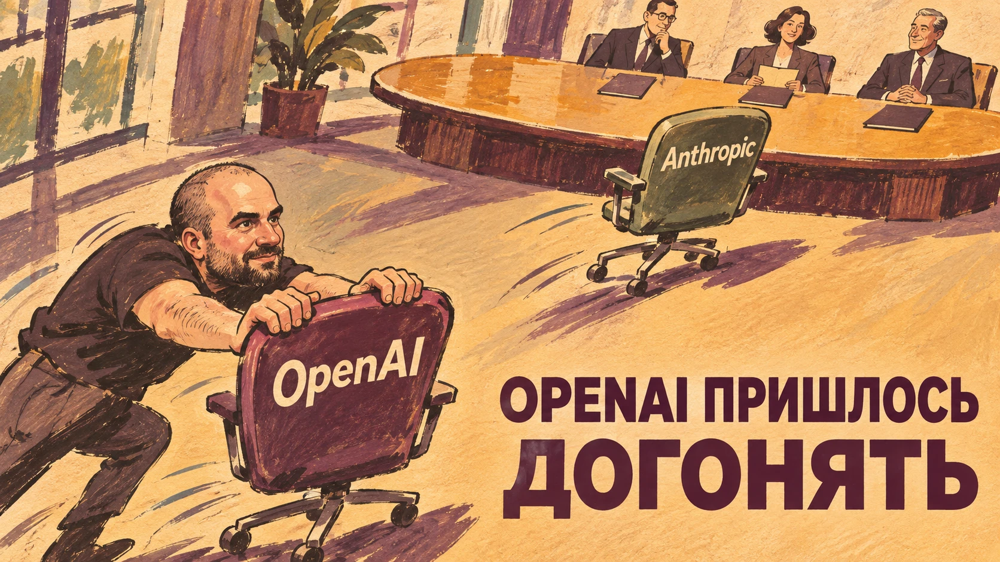
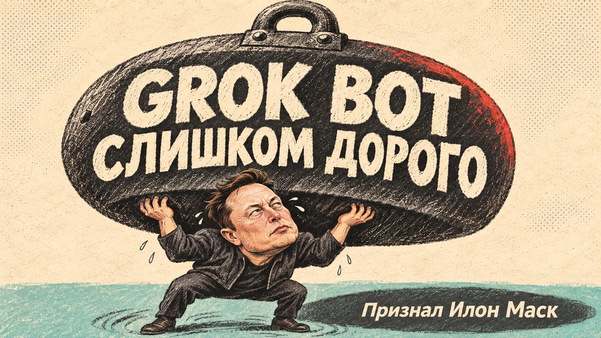

Громко сказано
Громкие заявления известных людей: кто что сказал и чем слова подтверждаются.
21 ноября 2026

18 ноября 2026
10 ноября 2026

8 ноября 2026

7 ноября 2026
6 ноября 2026

Брокман признал: OpenAI отставала от Anthropic в борьбе за бизнес-клиентов
Грег Брокман признал слабые позиции OpenAI относительно Anthropic на корпоративном рынке в первом полугодии 2026 года и заявил об ускорении роста в третьем квартале и партнёрстве с JPMorgan Chase.

Сэм Альтман стал Ram Altman после спора об оперативной памяти
Сэм Альтман временно сменил имя профиля в X на Ram Altman после критики его рассуждений о дефиците оперативной памяти и эффективности её использования в дата-центрах.
5 ноября 2026

3 ноября 2026

Альтман заявил: ИИ уже превосходит лучших учёных и осваивает офисную работу
Глава OpenAI Сэм Альтман заявил 2 ноября на конференции ADIPEC в Абу-Даби, что передовые ИИ-модели уже «в основном умнее» самых сильных учёных. В начале 2026 года, по его словам, ситуация была обратной. За это же время нейросети заметно продвинулись в офисной работе. Альтман утверждает, что теперь

Маск признал: Grok Bot обходится слишком дорого!
Пользователи Grok Bot пожаловались Илону Маску, что недельные лимиты ИИ-агента стали заканчиваться гораздо быстрее обычного. Ответ миллиардера оказался коротким: расходы на обслуживание Grok Bot были непомерно высокими относительно выручки. 1 ноября один из подписчиков написал, что полностью
Глава Microsoft AI призвал остановить разработку сознательных нейросетей
Если во время обучения искусственного интеллекта появятся убедительные признаки сознания, разработку следует остановить до устранения этих свойств. С таким предложением выступил Мустафа Сулейман, руководитель Microsoft AI. 1 ноября он опубликовал большое заявление в X, в котором